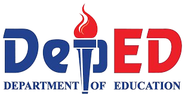

Programs & Academics
Junior High School (Grades 7-10)
Ang programa ng Junior High School ay nagbibigay sa mga mag-aaral ng matibay na pundasyong pang-akademiko, na nakatuon sa mahahalagang asignatura tulad ng English, Mathematics, Science, Filipino, Araling Panlipunan, at Technology and Livelihood Education. Ang programang ito ay naglalayong bumuo ng kritikal na pag-iisip, disiplina, at mabuting pagpapahalaga sa mga mag-aaral.
Junior High School Academic Program
-Nag-aalok ng standard na kurikulum ng DepEd na nakatuon sa mga pangunahing paksa at pag-unlad ng mag-aaral.
STEM Program
-Isang espesyal na programang pang-akademiko na nagbibigay-diin sa agham, teknolohiya, engineering, at matematika.
Special Program in Foreign Language (SPFL)
-Nagbibigay ng advanced na pagtuturo sa mga banyagang wika upang bumuo ng mga kasanayan sa komunikasyon at kultura.
Senior High School (Grades 11-12)
Inihahanda ng programa ng Senior High School ang mga mag-aaral para sa mas mataas na edukasyon, trabaho, at entrepreneurship. Maaaring pumili ang mga mag-aaral sa mga sumusunod na strand:
STEM (Science, Technology, Engineering, and Mathematics)
-Ang STEM strand ay nakatuon sa agham, matematika, at teknolohiya. Inihahanda nito ang mga mag-aaral para sa mga kursong may kinalaman sa engineering, medisina, IT, at iba pang science-based na propesyon. Nililinang dito ang analytical thinking, problem-solving, at research skills.
ABM (Accountancy, Business, and Management)
-Ang ABM strand ay para sa mga mag-aaral na interesado sa negosyo, pamamahala, at accounting. Tinuturuan nito ang mga mag-aaral ng mga konsepto sa entrepreneurship, marketing, finance, at business management.
HUMSS (Humanities and Social Sciences)
-Ang HUMSS strand ay nakatuon sa pag-aaral ng lipunan, kultura, komunikasyon, at politika. Ang strand na ito ay angkop para sa mga mag-aaral na mahilig magsulat, magsalita, at umunawa sa mga isyung panlipunan.
GAS (General Academic Strand)
-Ang GAS strand ay para sa mga mag-aaral na hindi pa tiyak kung anong kurso ang nais tahakin sa kolehiyo. Nagbibigay ito ng pangkalahatang kaalaman sa iba’t ibang larangan upang matulungan ang mga mag-aaral na tuklasin ang kanilang interes at kakayahan.
TVL (Technical-Vocational-Livelihood)
-Ang TVL strand ay nagbibigay-diin sa praktikal na kasanayan at hands-on training. Layunin nitong ihanda ang mga mag-aaral sa agarang trabaho o pagnenegosyo pagkatapos ng Senior High School. Kadalasan, may kasama itong TESDA certification.
SULTANA ROAD, TABON I, DANIEL FAJARDO, LAS PIÑAS CITY
lpnationalhs45@yahoo.com
Follow us:
Facebook - Las Piñas National High School - 305430 LPC
